MusicTheory
scale
treble clef
stave/staff(谱子), scale(音阶)上升:
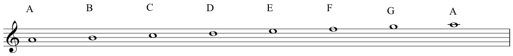
scale下降
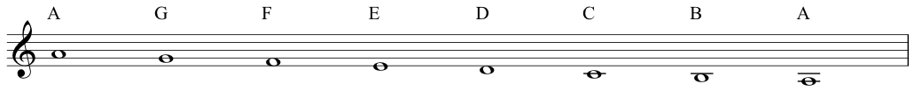
记忆treble clef 上的notes 的方法:
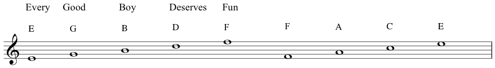
octave(八度音阶)
就是上下重名的notes:
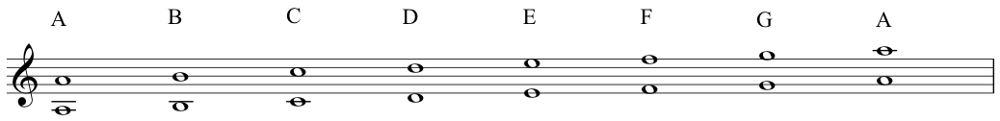
intervals
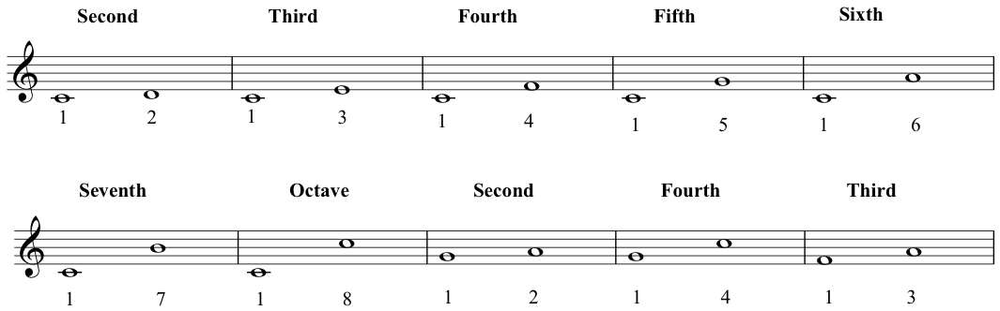
Tones and semitones
B and C, E and F是semitone, 其他都是tone
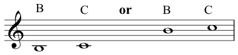
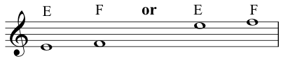
C major scale
scale是root note是C, 且符合TTSTTTS的音阶
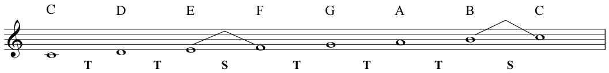
diatonic scale
在一个octave中包含两个semitones和五个tones的scale
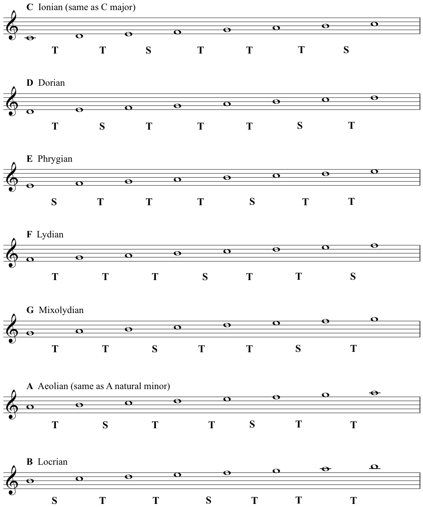
记忆的方法是:
I Don’t Punch Like Muhammad A - Li.
chord
perfect fifth
interval between the ‘bottom’ note and the ‘top’ note, breaking it down into semitones, and adding those up.
无论是从C到G还是从A到E都是perfect fifth.
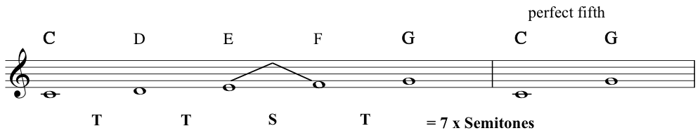
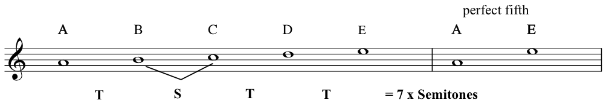
但是从C到E是major third, 从A到C是minor third.
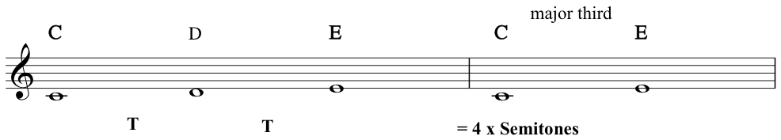
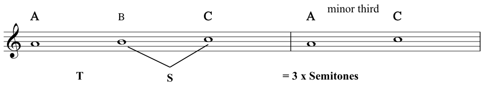
下面是C major scale的所有triad
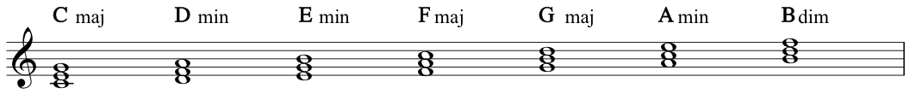
three primary chords:
在C major scale中 Cmaj称为tonic, Fmaj称为subdominant, Gmaj称为Dominant.
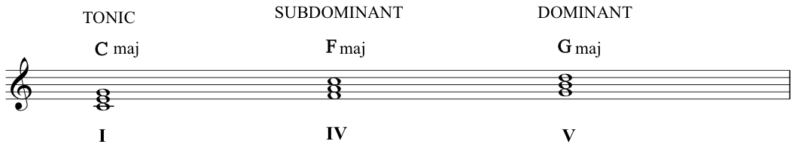
C major scale中的note和chord的搭配:
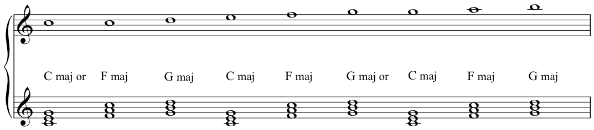
signature
所有的signature的记忆方法
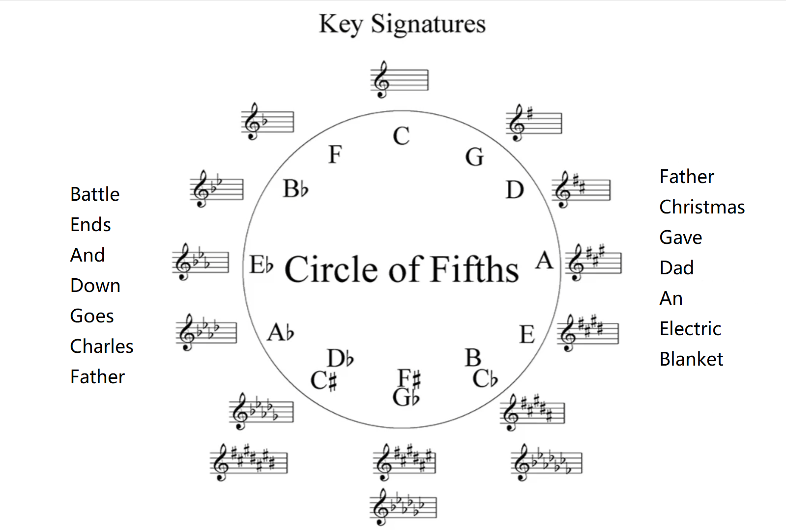
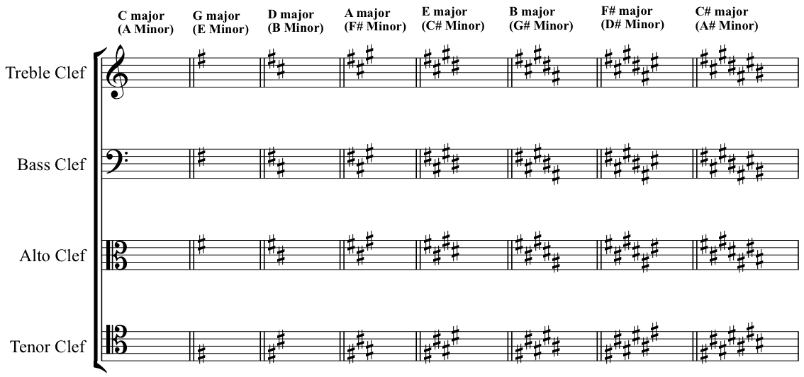
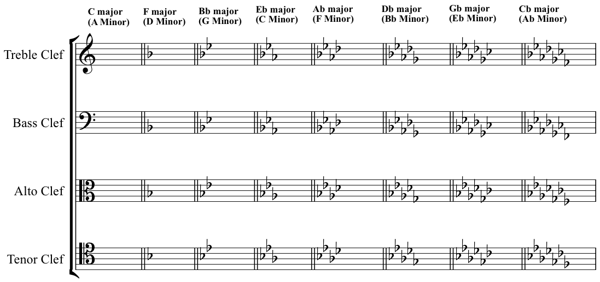
key signature包含一个sharp标记, 所以是G major
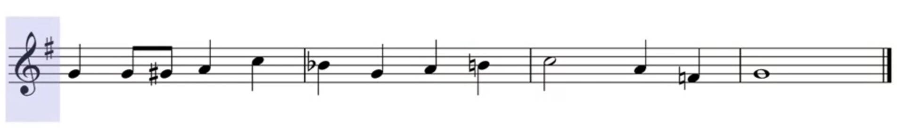
accidental flat B, 表示在该bar(小节)里, 所有的B都是flat
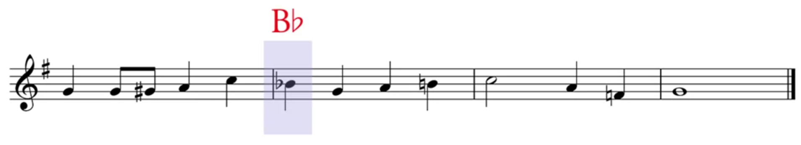
accidental natural, 在一个bar里, 表示该note, 恢复为正常的音高(没有sharp或flat),既B-Natural,而不是B-Flat
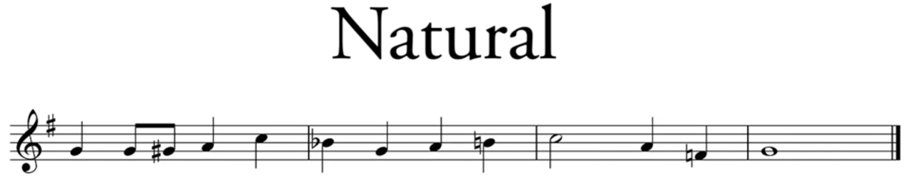
该bar里, 将F-Sharp变为F-Nature
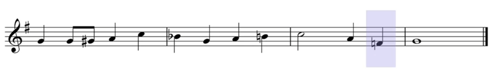
minor
1st note 被称为tonic note
5th note 被称为dominant note
7th note 被称为Leading note
minor scale 就是 6th degree of the major as this is the tonic of the relative minor.
Natural Minor
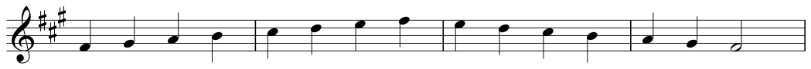
Harmonic Minor
raised 7th by semitone

Melodic Minor
- the ascending from of the melodic minor is the natural minor with a raised 6th and 7th degree
- descending form has these notes lowered again and is, thus, essentially the natural minor
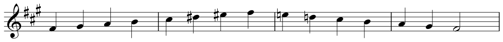
interval
major
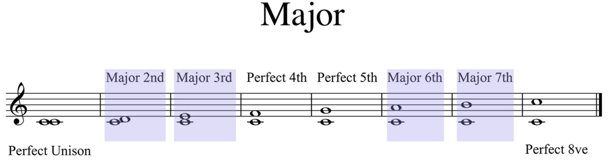
augmented
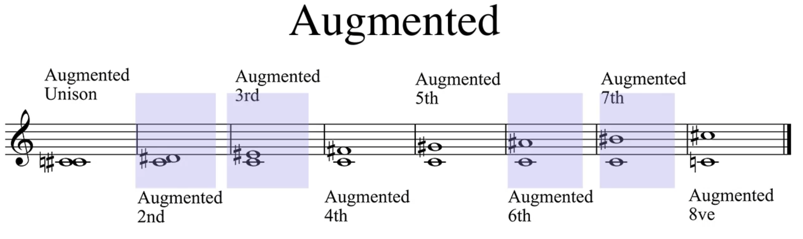
minor
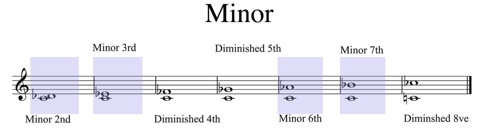
Ledger Lines
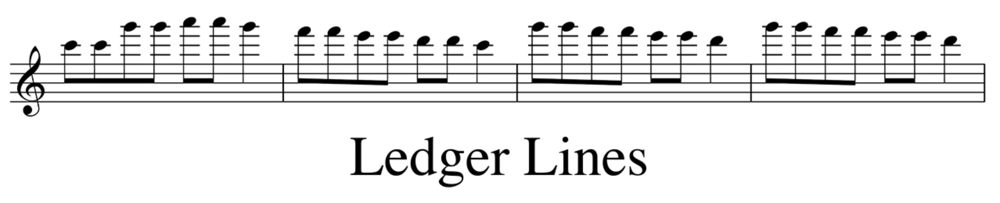
signature
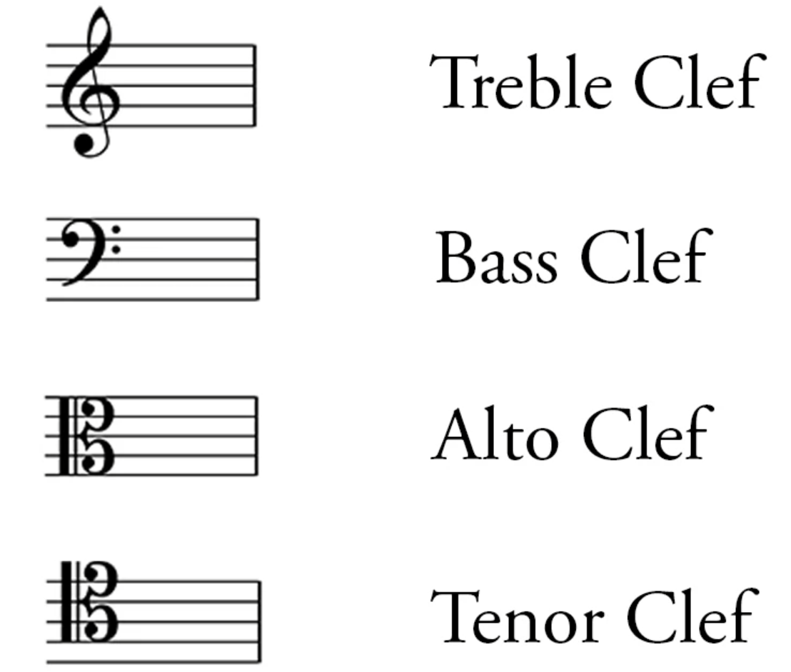
piano signature
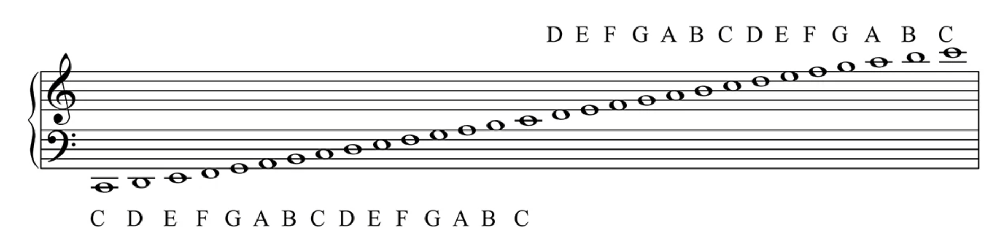
pitch
x axis 表示时间先手
y axis 表示high low
archbisop isidore of seville
fine lines -> stave(us, staff)
Treble-Clef(G-Clef)
octaves
semitone -> half
tone -> interval of a second